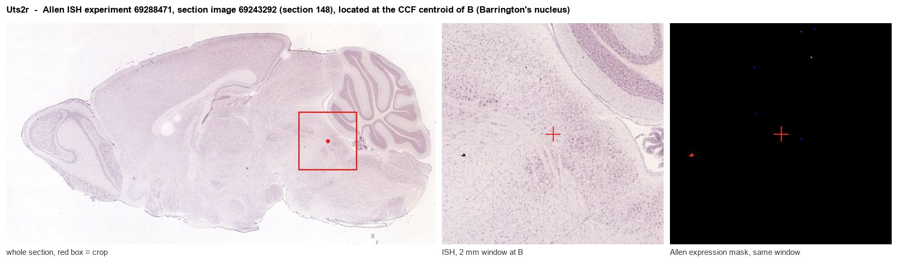
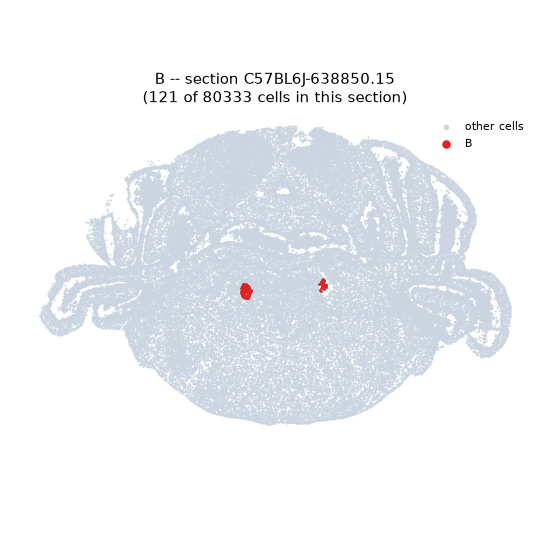
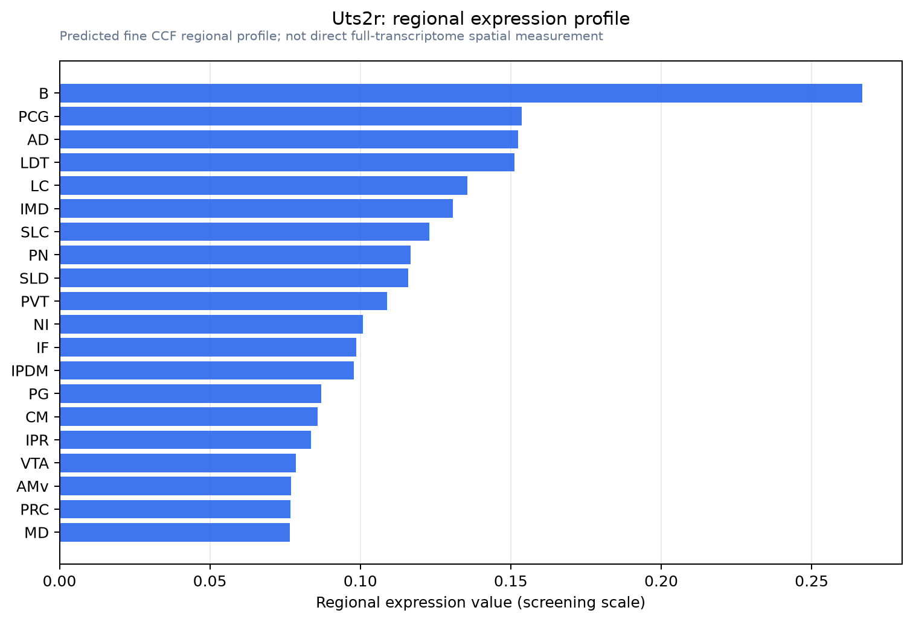

Uts2r
Urotensin-2 receptor (UR-2-R) (G protein-coupled receptor 14) (Urotensin II receptor) (UR-II-R)
Spatial tier: RESTRICTED · Class: GPCR · Top region: B (Barrington's nucleus) · Positive regions: 22/554
46.0Discovery Score
36.1Targetability Score
CEvidence grade C
What this means: Uts2r: fine CCF profile is restricted toward B (top regions: B, PCG, AD, LDT, LC; 22 positive regions); direct spatial validation is still required.
Function in B: evidence, prediction, innovation
- Gene function
- UTS2R (UT, formerly GPR14) is a class A G-protein-coupled receptor for the cyclic peptides urotensin-II and urotensin-related peptide. It couples to Gq, raising intracellular calcium through phospholipase C, and in the periphery mediates one of the most potent vasoconstrictions known. In the central nervous system its expression is strikingly restricted to cholinergic neurons.
- Region function
- Barrington's nucleus, the pontine micturition centre, contains CRH-positive and glutamatergic neurons projecting to lumbosacral parasympathetic preganglionic neurons; it triggers bladder contraction and coordinates detrusor activity with urethral sphincter relaxation.
- Published in this region
- inferred No region-specific literature found. Clark et al. 2001 localised UT mRNA to choline acetyltransferase-positive neurons of the rat mesopontine tegmentum, that is the pedunculopontine and laterodorsal tegmental nuclei that immediately abut Barrington's nucleus, and Huitron-Resendiz et al. 2005 showed that urotensin-II applied to these brainstem cholinergic neurons promotes REM sleep; Barrington's nucleus itself was not examined.
- Predicted function
- Prediction: given that Barrington's CRH and glutamatergic neurons receive strong cholinergic modulation, UT is predicted to sit on or adjacent to these cells and to act as an excitatory Gq modulator that raises bladder-filling sensitivity and lowers the voiding threshold, potentially linking arousal state to continence. Local urotensin-II infusion into Barrington's nucleus should shorten inter-void intervals and reduce threshold bladder volume in cystometry, whereas the antagonist palosuran or urantide should lengthen inter-void intervals; the urotensin-diphtheria-toxin conjugate offers a way to ablate UT-expressing cells and test whether sleep-related voiding control is lost.
- Innovation
- ★★★★★ 5/5 A receptor with well-documented expression in the immediately neighbouring cholinergic tegmentum has never been tested in the pontine micturition centre, a region with clear clinical relevance and excellent Cre tools.
- Tools
- UT antagonists palosuran, urantide and SB-706375; agonist urotensin-II and URP; urotensin-II-diphtheria toxin conjugate for selective ablation of UT-expressing cholinergic neurons (Clark et al. 2007); Uts2r knockout mice; Crh-Cre and Slc17a6-Cre for Barrington's neuron subtypes.
- References
Direct evidence located at the region

Allen ISH experiment 69288471, section image 69243292 (section 148): the section that contains the CCF centroid of Barrington's nucleus according to the Allen image-to-atlas alignment (reference_to_image), with a 2 mm window around that point. Left: whole section, red box = window. Middle: ISH signal. Right: Allen's expression-mask view of the same window. open this image in the Allen viewer
Look it up yourself: Allen Mouse Brain ISH for Uts2rAllen reference atlas: B (structure 280)ABC Atlas MERFISH viewer(in the ABC Atlas choose dataset MERFISH-C57BL6J-638850-CCF, colour cells by gene "Uts2r" or by parcellation_substructure "B")All genes confined to B + 3-D brain
Direct spatial evidence
MERFISH REGION LOCATOR

Regional expression figure

Predicted WMB × fine-CCF profile; not direct full-transcriptome spatial measurement.
Spatial profile
Evidence and specificity
- Evidence status
- PREDICTED_FINE
- Direct sources
- None; predicted localization only
- Exclusive threshold
- 12 positive regions out of 554
- Spatial specificity
- 0.334
- Top-region fraction
- 0.071
- Filter status
- PASS
Interpretation limits
- Cell-type-to-region projection is imputed expression, not direct spatial measurement.
- Adult reference atlases do not establish stability across age, sex, strain, state, or disease.
- Transcript abundance does not guarantee protein abundance or genetic-tool performance.